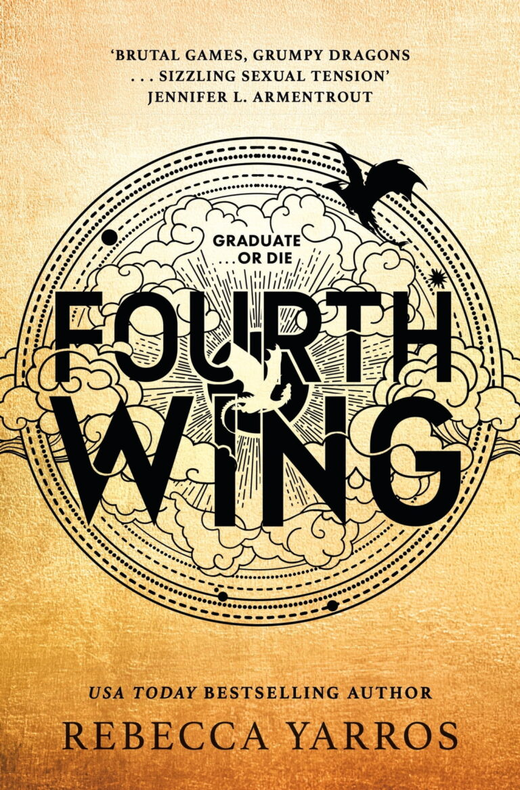
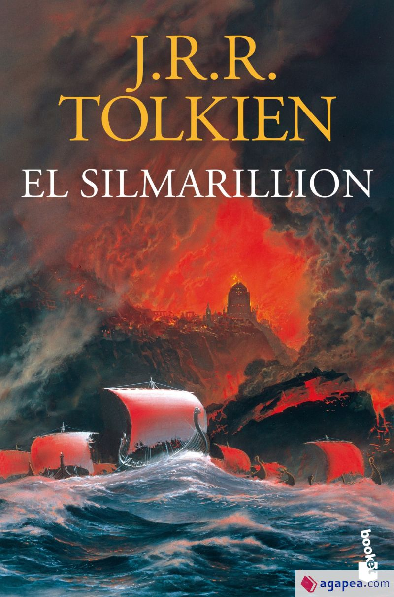
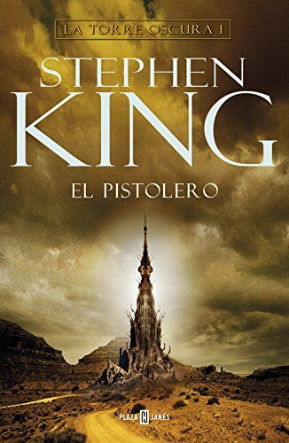
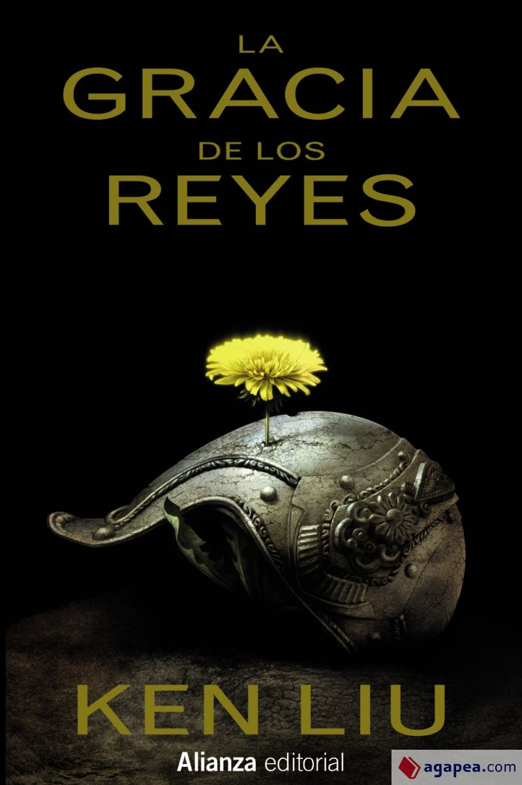
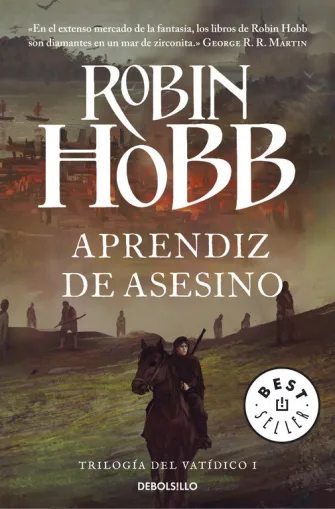

Libros Recomendados
| Nombre del Libro | Autor | Núm. Páginas | Sinopsis |
|---|---|---|---|
|

Fourth Wing
|
Rebecca Yarros | 528 | Se suponía que Violet Sorrengail, de veinte años, entraría en el Cuadrante de Escribas, viviendo una vida tranquila entre los libros y la historia. Ahora, el general al mando, también conocido como su madre dura como talones, ha ordenado a Violet que se una a los cientos de candidatos que se esfuerzan por convertirse en la élite de Navarra: jinetes de dragones. Pero cuando eres más pequeño que todos los demás y tu cuerpo es frágil, la muerte está a solo un latido del corazón… porque los dragones no se unen a los humanos «frágiles». Los incineran. Con menos dragones dispuestos a unirse que los cadetes, la mayoría mataría a Violet para mejorar sus propias posibilidades de éxito. El resto la mataría solo por ser la hija de su madre, como Xaden Riorson, el líder de ala más poderoso y despiadado del Cuadrante de Jinetes. Necesitará todas las ventajas que su ingenio pueda darle solo para ver el próximo amanecer. |
|

El Silmarillion
|
John Ronald Reuel Tolkien | 448 | El Silmarillion es el núcleo de los escritos creativos de J. R. R. Tolkien, una mitopoeia cuyos orígenes se remontan a un tiempo muy anterior a El Hobbit. Cuenta la historia de la Primera Edad, el antiguo drama al que se refieren los personajes de El Señor de los Anillos, y en el que algunos de ellos, como Elrond y Galadriel, tomaron parte. Los tres Silmarils eran joyas creadas por Fëanor, el más dotado de los elfos. Dentro de ellos estaba encerrada la Luz de los Dos Árboles de Valinor antes de que los propios Árboles fueran destruidos por Morgoth, el primer Señor Oscuro. Cuando esto ocurrió, la Luz inmaculada de Valinor permaneció en vida solamente en los Silmarils, pero éstos acabaron en la corona de Morgoth, custodiada en la impenetrable fortaleza de Angband, en el norte de la Tierra Media. El Silmarillion es la historia de la rebelión de Fëanor y sus congéneres contra los dioses, su exilio de Valinor y su regreso a la Tierra Media; de la guerra, desesperada a pesar del heroísmo, contra el gran Enemigo. |
|

El Pistolero. La torre oscura I
|
Stephen King | 304 | La primera parte de la saga de fantasía del consagrado escritor de best sellers es una historia llena de ritmo y acción. El autor nos mantiene en el ritmo frenético al que estamos acostumbrados y rebosa de una trama con personajes con matices. Roland de Gilead es el héroe solitario y maldito que conoce a Jake, un chico de otro tiempo, y el que nos guía por esta maravillosa historia hasta la Torre Oscura. El pistolero es el libro de fantasía que te sumergirá en el maravilloso wéstern de King y en toda su obra, ya que guarda relación con otras novelas del autor tan conocidas como El misterio de Salem’s Lot. |
|

La Gracia De Los Reyes
|
Ken Liu | 736 | Este es un relato épico de dos amigos que se rebelan contra la tiranía en el ocaso de un imperio corrupto y opresor. Dos improbables aliados (un guardia de prisión convertido en bandido y un noble desheredado) unen sus fuerzas para derrocar al tirano. En "La gracia de los reyes" Ken Liu reescribe la fantasía épica desde una perspectiva cultural diferente y abandona sus escenarios convencionales: es un mundo de dioses que lamentan lo que se hace en su nombre, mujeres que conspiran y luchan junto a los hombres, cometas de guerra, aeronaves de bambú y seda, y monstruos marinos. |
 La Sombra de los Dioses
La Sombra de los Dioses
|
John Gwynne | 460 | Ha pasado un siglo desde que los dioses lucharon y se extinguieron. Ahora solo quedan sus huesos, que prometen un gran poder a aquellos lo suficientemente valientes como para buscarlos. Mientras los susurros de guerra resuenan en la tierra de Vigrið, el destino sigue los pasos de tres guerreros: una cazadora en una búsqueda peligrosa, una mujer noble que busca la fama en la batalla y un esclavo que busca venganza entre los mercenarios conocidos como los Hermanos de Sangre. Los tres darán forma al destino del mundo, ya que una vez más cae bajo la sombra de los dioses. |
|

Aprendiz de Asesino
|
Robin Hobb | 392 | Aprendiz de Asesino es la novela de una irresistible voz dentro de la Gran Fantasía. La narrativa refrescante y original de Robin Hobb es el comienzo de una nueva época dentro de la literatura fantástica. El joven Traspié es el hijo bastardo del noble príncipe Hidalgo, heredero al trono de los seis ducados. Después de ser rechazado por su familia, es llevado a la corte real donde crece bajo la tutela del arisco caballerizo de su padre. Todos los miembros de la realeza lo consideran un paria salvo el taimado rey Artimañas, que ordena que su secretario lo adiestre en las artes del asesinato. Pues por las venas de Traspié corre la sangre de la mágica Habilidad... junto a los más oscuros saberes de un niño criado con los perros del establo y repudiado por su familia. Mientras los bárbaros invasores saquean las costas, Traspié se convierte en un hombre. Pronto habrá de arrostrar su primera misión, tan peligrosa como desoladora. Y aunque hay quienes ven en él una amenaza para el trono, quizá posea realmente el secreto de la supervivencia del reino. |